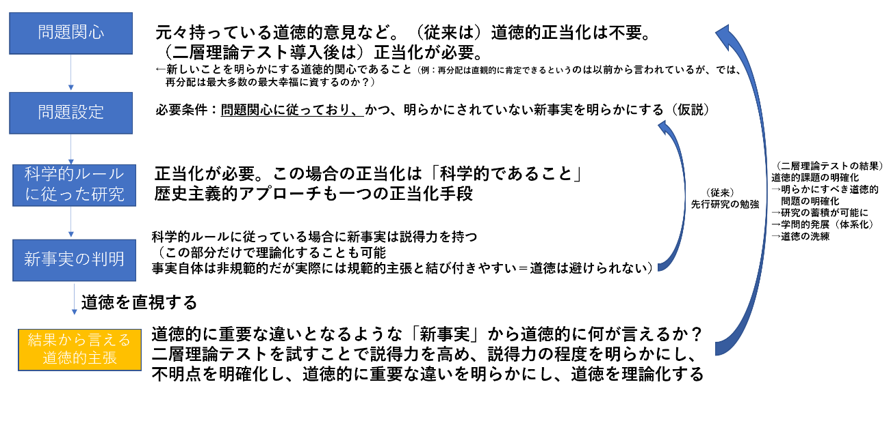

筑波大学人文・文化学群比較文化学類3年澤木雅也
問題意識
1.これまでの取り組み
地理学を含む人文社会科学の主張の正当性を問う科学哲学的な視点から、その方法論を模索したのが大学2年生の時である。一言でいえば、「地理学を論理学・メタ倫理学の視点から分類し、分類ごとに特有の正当な方法論を模索した」のである。「道徳」が自然科学と社会科学を分かつ重要な点であると考えていたし、今もそう考える。「形式地理学」が道徳を極力排除し自然科学的手法を指向するもの、「実践地理学」が規範的主張の根拠を問わずに積極的に道徳的主張を行うもの、「人類地理学」は記述倫理学的な観点から地域の道徳を記述するものである[1]。この3つの分類は、それぞれ問題を抱えている。形式地理学は、そもそも道徳を排除できない社会科学において態度として矛盾しており、実行不能である。実践地理学は道徳的主張の根拠が不明瞭であるために水掛け論になり、政治的対立に終始する。人類地理学は人類学として独立した分野があるので、あえて地理学に入れるべき理由がない。つまり現実の地理学は、ここでは「実践地理学」に属しているといえる。
歴史学、統計的手法、論理的推論、経験的データの重視など、こういった方法論はすでに社会科学の研究手法として洗練されつつあり、そこに「哲学的」な文句を加えること（例えば、「帰納法は論理的に根拠がないですね」等）は生産的ではないと思う。自然科学に客観性や正確性で劣るとしても、それ自体は科学的指向であって、その枠内では問題はない。私の見たところでは、地理学の方法論を問うてきた哲学的な方々は、生産的な批判ができていないように思うのである。それには理由がある。生産的な方法は現場の地理学者（や社会科学者全般）がどんどん生み出しているが、哲学は現場ではなく「一般論」で語る傾向がある（例えば「帰納」は自然科学・社会科学のすべてに当てはまる）。一般論で批判するということは、地理学の根本を否定して再構築しようという主張、つまり「オルタナティブな地理学」を目指すことになる。
しかし、地理学は根底に帰納法やオッカムの剃刀などへの「信仰」があるとしても、現状でもかなり理性的であり、経験的であり、成果を出している。重要なのはそのうちの、理性の点である。理性は道徳とは異なり人によって働き方が違うということがないし（程度はあれ、誰でも数学を理解できる）、世界はどうやら理性的（数学的）に法則があるようでもある。しかし、哲学的に現在の地理学を根底から疑う＝理性的な手法をも疑うということになると、結果的に反理性的な説明にならざるを得ない面がある。ゆえに、そうしたアプローチでは、散文的・非論理的・形而上的・反現実的な、「意味不明な」議論となってしまう傾向性を持つことになる。「形而上的で意味不明な議論をしてはいけない」というのは、論理的な根拠はないものの、（自然）科学の常識であり、それを破るのは殆どの場合、科学的な意味では非生産的な形で終わるだろう。そして、大学2年生の時は私もその方向性で議論をしていたのであった。
2. nonscientific philosophy of scienceではなく、Scientific Philosophyを指向する
そこで、「非科学的な科学哲学」ではなく「科学的な哲学」を指向するのである。
上でも述べた通り、実践地理学（人文地理学）の重要な本質は「道徳」であるから、そこから議論をするのが良いだろう。
一般に道徳的主張は「一般化できない主張ならば、それは非科学的である。道徳は一般化できない。したがって道徳的主張は非科学的である」（★）と思われている。これを真に受けると、道徳的主張を排除する方向に向かう（マックス・ウェーバーなどの19～20世紀的発想、つまり「形式地理学」）か、開き直って道徳的主張をする（実践地理学）か、道徳からメタな視点に立とうとする（人類学）ことになる。上でも述べたように、実践地理学の方面から地理学を救わなければならないのである。具体的には、★のうちの小前提「道徳は一般化できない」を否定することができれば問題解決である。そのためには、Scientific philosophyの発想、すなわち「道徳を科学の言葉として違和感ないように使う方法を考える」ということだ。
本論
3.道徳とは何か
「道徳を科学の言葉として違和感ないように使う方法を考える」というゴールを設定したが、ここで重要なのは「道徳」に対する理解である。ここでは、哲学、特に「倫理学」という分野が議論のために有効である。
「道徳」は3つのレベルで考えることが可能である。「政治哲学」はもっとも現象的なレベルである。自由主義、社会主義、コミュニタリアニズムなどが含まれる。現実政治の在り方について、望ましいものを考察する分野である。例えば、「新自由主義的政策によって生じた格差をなくそう」という表現は政治哲学的に一つの立場を表明している。
2つめ、やや形而上的だが現象的な「規範倫理」というものがある。これは、科学的に重要な違いがあるという観点でいえば二つしかない。義務論と功利主義である[2]。科学という視点から見て重要なのは、義務論は「直観」に基づき、功利主義は「客観的事実」に基づくということである。殺人が良くないのは「直観的に」分かる、というような言い方は義務論的である。しかし、直観こそ科学の敵という印象があるだろう。そう思う論者は、おそらく功利主義＝客観的事実に基づいて道徳的主張をしようとする。しかし功利主義には科学的な問題がある。「格差社会をなくすための再分配は、最大多数の最大幸福が実現する手段だ」といった主張を受け入れると、様々な道徳的ジレンマが生まれることが分かっている[3]。
義務論も功利主義も完全ではないという事だ。
3つ目は「メタ倫理」というものである。これは純粋に形而上的であるため、科学的に利用できる範囲内にはない。したがって無視する。
4.規範倫理をどう活用するか
政治哲学の議論は規範倫理（義務論と功利主義）の議論に還元できるため、規範倫理を科学の言葉として矛盾なく一般化し、利用することができればよいということが分かる。
ここで新たな概念として、「ヘアの二層理論」を導入する。私達は普段、道徳判断は直観で行っている（深く考えていない＝第一レベル）が、判断に迷うと様々な要因を考慮するようになる。その要因をひとまとめに言えば、功利原理（どちらが人を幸福にするか）である（第二レベル）。これが私達の道徳的判断を的確にモデル化したものであるかどうかは、科学的根拠はないと思われるが、帰納法と同じように受け入れるべき理由を挙げることはできる。以下に列挙する。
①直観的に考えて、否定すべき理由がない。（ヘアの二層理論に基づく判断に、重大な誤りがあるとは考えられない）
②道徳的ジレンマの解消手段には、「くじ引き」「多数決」「託宣」「伝統」「インフルエンサーに従う」などもあるが、これらは「道徳的正しさ」として一段劣ると直観的に感じる[4]。
③②で挙げたような手法に正しさを見出す人がいるとしても、そういった手法にあえて従うというのは、科学の「独自性」を放棄することを意味している。人々とは敢えて違う判断基準を提示する（啓蒙する）ことは科学という世界観を広めることであり、意義のある事だと感じる。
④功利原理は「伝統」や「インフルエンサー」に比べれば客観的であり、議論が可能な領域である。科学とは「理性的に議論する」ものであるから、「くじ引き」は科学的ではない（例えば、経済学の議論（ハイエクvsケインズのような）が可能なのは、議論の一つの面として功利原理に基づいているからだ）
⑤医療倫理のような分野で、規範倫理に基づいた医療ガイドラインの作成などが進んでおり、科学の側での実践例がある。
以上のような利点を考慮し、ヘアの二層理論を科学的手法として取り込むことを目指す。
5.道徳的ステータスの明確化
ここでの議論は、実践地理学を科学的なものとするために、「道徳的主張を一般化する」ことを目指すのであった[5]。「道徳的主張を一般化する」とは、地理学が、（ヘアの二層理論のモデルの内部で）正しい道徳的主張を目指すという「目標」を持つということだ。
そこで、次にその「方法」を与え、議論を可能にする条件を明らかにする。
「議論」をするには、相手と自分が同じことを考えていることが必要条件である。しかるに、「道徳」はそうでない場合が多い。例えば、「男女平等を目指すべきだ」という主張の背景には、「神は人を平等に作った」だとか、「功利原理的にそうすべきだ」とか、「欧米ではそうなっている」、「憲法は男女平等を指向している」「搾取は良くない」とか様々である。こうした理由付けは様々あるために、一般には政治哲学的に（多文化主義的に）相対主義に陥り、水掛け論となるのである。しかし、上述の通り、政治哲学は（奇跡的にも？）義務論と功利主義の2種類に還元できることが分かっている。ということは、科学的に議論が可能になる道徳的主張の在り方は次の条件を満たしている場合である。
①道徳的主張が、道徳的に重要な違いをもたらす要素だけで表現されていること。（道徳的に重要な違い…誰が/何を/いつ/どうやって など）
②道徳判断に含まれる事実については、正確なものを利用すること。
③道徳的主張が直観に基づくのか、功利原理に基づくのか（あるいは両方か）が明らかにされていること。
④功利原理に基づく場合は、その根拠（経済学理論など）が示されていること。
⑤道徳的主張は「二層理論テスト（仮称）」を経たものであること。道徳的な「正しさ」の程度は以下の5つのパターン、3段階の説得力の程度に分類される。
（説得力：高）
「正しい」…直観に反さず、かつ道徳的ジレンマ状況を功利原理で反論できること。
（説得力：中）
「直観に反するものの功利原理的に肯定できる」…功利原理的に従って肯定できるが、道徳的ジレンマ状況にある、つまり直観に反している状態。
「功利原理に反するものの直観的に肯定できる」…直観に従って肯定できるが、道徳的ジレンマ状況にある、つまり功利原理的に反している状態。
（説得力：低）
「直観的には肯定できる」…その個人の直観に反さない状態であり、同時に、道徳的ジレンマ状況（功利原理）は考慮していないこと。
「功利原理的には肯定できる」…功利原理（経済学理論など）に従って肯定している状態あり、同時に、道徳的ジレンマ状況（直観）は考慮していないこと。
例えば、「この格差問題を解消するには…」などと書きたい時、上の条件に誠実な科学者であれば、まず、「直観的に考えて格差は解消すべきである」と考える。格差の解消が何を意味するのか定義を明らかにする必要もある（要素に還元する）。突き詰めて還元すると、「直観的に考えて政府は税金を徴収すべきだ」という主張になるとする。次に、格差を解消しない＝税金を徴収しない立場を肯定する道徳的主張（＝税金は国家による強奪である）という主張を（仮想的に）取り上げ、あえて道徳的ジレンマ状況を作る。そこで、功利原理に基づき、再分配する/しない、のどちらが良いかを経済学や政治学などの理論に基づいて検討する。検討の結果、再分配が格差を解消する（直観的に正しい）のみならず、最大多数の最大幸福に資する（功利原理的に正しい）と考えられるならば、それは道徳的に「正しい」。再分配は格差を解消するが、社会が停滞するなどの結論が得られた場合は、「功利原理に反するものの直観的に肯定できる」といえる。こうした流れが学者の間で普遍化すれば、「格差は解消することが正しい。そのためには…」「格差は解消することが直観的に肯定できる。そのためには…」「格差は解消することが功利原理に反するものの直観的に肯定できる。そのため…」などという表現が何を意味しているのかが明確になり、議論を進めることが可能になる。例えば、直観でしか支えられていないことが判明した場合には、ジレンマ状況を想定して功利原理による正当化をすればよいのである。これで議論はかなりすっきりとしたものになるだろうし、議論が水掛け論や相対主義に陥ることなく、目標に向かって白黒つけることが可能になるはずだ。もちろん、道徳的に「正しい」のはヘアの二層理論というモデルの内部の話である。しかし、目標なく議論を進めるというのは「哲学」であって科学ではない。科学という営みは、現実の近似を記述することであり、近似を記述するための根本的なモデルとして、ヘアの二層理論が現時点で最も望ましいのである[6]。道徳的正しさを追求しないという選択肢が科学としてあり得ない以上は、もしこのアプローチに反対する場合にはヘアの二層理論以上に受け入れやすい根本的なモデルを提示する必要があるのではないか。それはちょうど、帰納法の代わりが簡単には見つからないのと同じである。ここに、倫理学と地理学の協働の可能性があると考える。
6.まとめ
地理学を科学として救出するには道徳の扱いが問題となる。そこで、「一般化できない主張ならば、それは非科学的である。道徳は一般化できない。したがって道徳的主張は非科学的である」という推論のうち、「道徳は一般化できない」という命題を、ヘアの二層理論の採用によって回避し、道徳的主張をしつつも科学的でありうる方法論を以上に示した。それは、規範倫理（直観と功利主義）の知見を援用するものである。これによって、道徳的議論が科学の世界内で、客観性をもって行い、近似的な道徳的正しさを社会に提示することができるはずである。
モデルのイメージ
1.道徳的正しさの解は一つに定まるのか
→定まらなかった結果政治哲学が存在しているのかもしれないが、それはやってみないとわからないとしか言えない。「白いカラスはいないのか？」と同じ感じの問い。
また、道徳的に無矛盾な体系を作ろうという指向があるのは確か。（科学はなんでも系統立てて矛盾なく説明することを指向する）
道徳を遡るとも結局好き嫌いに帰着する（解は一つにならない＝好き嫌いの程度問題）という形而上学的説（非実在論、情緒主義など）がある。ただ、それは仮説であって経験的に検証しなくてはならないと自然科学なら考えるはず。政治心理学や社会学、人類学などの学問の違いは、道徳に対するメタ倫理的態度の違いにあるのかもしれない。もしヘアの二層理論を援用する地理学が構築されたときの、「地理学の独特さ」は次のようになるだろう。
①倫理学に最も接近した人文科学であること。
②モデル内の価値相対主義を認めること（道徳的ジレンマを創造して功利主義のテストにかけること）で、客観性を確保しようとするところ。いわば反証可能性のようなものを設定している。
③相対主義（非実在論）ではなく「何が道徳的に正しいか」を探求する姿勢（実在論）
（実在論と非実在論の区別が妥当だとはあまり思われない。というのも、非実在論は「道徳は感情などに還元できる」という立場であるからだ。もし、実際にそう考えることが経験的にもっともらしいなら、それは実在論（世界には道徳的な何かが何らかの形で実在している）の範囲内で語ることができる。←ギルバート・ハーマンなどの説に近いらしい？？（非還元主義的自然主義））
2.道徳的に無矛盾な体系を指向するのは道徳の捉え方として正しくないのではないか
→徳論などはそういう方向から議論を始めるが、議論する時点で無矛盾さを多少は指向してしまうため、どれくらいの無矛盾さを目指すのかは、二層理論内にバラエティがありうる。
そもそも、自然科学も、世界の自然法則が理論的な体系化が可能であると言うべき論理的な根拠は欠いているのであり、「できるだろう」という程度である。
3.道徳に正しさはないと言う立場（相対主義）は否定するのか。
これは、観念論vs実在論と同じであると思われる。自然科学は観念論を論理的に否定できず、無根拠にも実在論にコミットする。何かが実在し、実在には法則性があると言う発想が科学である。道徳は人間のいるところになんらかの形で存在しているのは確かである。道徳にも正しさがあると仮定し、経験的に解き明かすのは一つの方法としてあり得る。相対主義をとると法則発見への動機が消失する。もちろん、実在論と言っても、「ヘアの二層理論に基づく正しさを受け入れるなら」と言う仮定のもとで、である。
相対主義はありうる形而上学的見解だが、議論の生産性（盛り上がりや応用可能性）がない。科学の必要条件は生産性・応用性である。
4.ヘアの二層理論は帰納法と同じ地位にあるのか？
ヘアの二層理論よりも洗練された規範倫理が出てくるかもしれず、二層理論をとるべき論理的根拠がないという点では、帰納法と同じ。
5.経済学説の違い（例えば、新自由主義vsケインズ主義）はヘアの二層理論で説明できるのか
基づく直観が異なる可能性があるし、基づく功利主義的手法（経済理論）も違う。仮想的ジレンマ状況の検討が足りない結果かもしれない。功利原理を採用する以上、経済学説の違いを知らないと地理学に支障が出るということになる。（経済学説を絶対視せず、政治学とか歴史学といった視点も利用していいかもしれない。例えば、「格差は民主主義を損なう」といった説があるが、これは歴史学的な法則である。）
6.「人を殺してはいけない」と言う直観にも仮想的ジレンマ状況を考えるべきなのか。
考えるべき。道徳に対してまずは価値中立的に考えるのが、ヘアの二層理論に基づくやり方である。現実に、道徳的に重要な違いがあれば許される場合もある（死刑、戦争、正当防衛など）。
7.功利原理の適用範囲は国民国家？世界？
道徳的に重要な違いの例であり、それぞれ適宜設定すれば良いと思われる。（結果的に重解になるなら道徳的に重要な違いではないらしい、ということである）
8.「神に従うべきだ」は直観として受け入れるか？
神の存在が道徳的に重要な違いを生むのであれば、それが一つの公理系になる可能性はある。
9.直観は正しいのか？
正しいとは限らないが、正しさに近似しているため利用すると言うスタンス（「定言命法」は誰にでも当てはまる道徳）。直観的に全く受け入れられないが功利主義的に肯定できるような主張は説得力として完全ではない（Q.13参照）。正しさを極力高めるため、直観、功利主義、仮想的ジレンマ状況の三つを利用していると言っても良い。
10.功利主義を採用している時点で自由主義的バイアスがあるのでは。
基本的な功利主義は個人主義的だが、もしこれが直観的に受け入れ難いのであれば、仮定として（道徳的に重要な違いとして）国家単位などにしても良い。自由主義の影響はあるが、換骨奪胎されている。
11.道徳的主張を還元していくとメタ倫理（形而上学）に入るのではないか。
それが道徳的に重要な違いになるなら、入る可能性がある。そのような場合は最低限度の区分（公理系）を作る必要があるし、哲学者との協力が必要になるだろう。
12.上記のプロセスを経るとどんな道徳観が構築されるのか？
道徳的に重要な違いがいくつかあって（あるならの話だが）、それが公理となり、公理系がいくつかできるというイメージ。出来れば一つの理論体系にまとめたい、というのが科学だろうから、解（公理系）複数ある状態はオッカムの剃刀の考えから言って、あまり望ましくはないのかもしれない。
参考までにいえば、ロールズの正義論もノージックの考えも、解を発見できるという前提があるが、それは公理をまず立ててそこから演繹するトップダウン型である（哲学はあくまで無から体系を作りがち）。そういう姿勢は無矛盾で良いと思うが、経験論的ではないため、直観に反する答えを出すことがあるのが欠点（リベラリズムにおける平等主義、リバタリアニズムにおける格差容認、など）。
逆に、ここでやろうとしているのは、ヘアの二層理論地理学版、経験的で（地理学者の議論をベースに公理を発見する）ボトムアップ型であり、そこが自然科学らしい発想といえる。
13.上記の定義で「正しい」に至ることは難しい例があるのでは。
（例えば、線路上に作業員がいて、1人を殺すか5人を殺すかみたいな思考実験）
道徳的に「正しい」解が存在しないということは、道徳的に何も語れないという事ではない。この例の場合は、「直観に反するが功利主義的には肯定できる」の例であろう。
あとがき
私は科学哲学に興味があるのだが、同時に啓蒙思想や自然科学の考え方が好きという立場である。なので、論理実証主義運動とか反証主義なんかは発想としては共感するところが多い。科学を行う者が覚えておくべきだと思うのは、科学は論理的・経験的ではあるが、証明不可能/反証不可能な形而上的な前提にも基づいているということだ。オッカムの剃刀は「美学」である。
いま、道徳についてはグローバル化や多文化主義運動などもあってか、相対主義全盛の時代（とその反動の時代）といっても差し支えないのではないか思う。科学というのはある種の価値観を（科学的根拠なく）普遍的に正しいと前提しているという点で、よく言えば啓蒙主義的、悪く言えば帝国主義的だ。宗教の一種として科学を捉える視点はこういう意見から出てくるのだろうが、科学を支持すべき理由は色々（予測可能性の高さ、工学的な応用、豊かさの実現、幸福の増進など）あると思うし、私は理性の力を信じている（アイン・ランドが好きだ）。
科学がいまほど結果を出していなかった17世紀ごろの状況を振り返ると、なんとなく、社会科学が置かれた立場は400年前くらいの自然科学と似ているような気もする。その最大の原因が道徳だと思うのだ。私がこの論考で主張しているのは、自由主義国家に生きるという「相対主義的態度（寛容の精神）」を取りつつ、同時に科学的な道徳的正しさ＝「絶対主義的正しさ」を追求するという、ある意味矛盾するものである。このバランス感覚を維持するためには、様々な視点での道徳の分析と、分析のための理論が必要だろうと思っている。「道徳に答えや正しさはない」というのと、「道徳の答えや正しさを求めるのは難しい」というのは異なるものだ。科学というのは本質的に楽観的な側面があるのだろう。
コメントを随時募集しています！ここまでお読みいただきまして、ありがとうございました。
[1] この三つの地理学の区分は私が個人的に行ったものであって、普遍的な用法ではない。
[2] もう一つ、「徳論」があるが、論理的に突き詰めれば直観に基づくということになるだろうから、義務論に属するものだと考える。
[3] 再分配問題でいうと、個人に過大な要求を課すことが肯定されるという事が挙げられるだろう。日本人の金持ちから日本人の貧乏人に再分配することが功利主義的に肯定されるなら、日本人の貧乏人から最貧国の飢えた人に再分配することも肯定できるのではないか、という議論である。また、義務論からの再分配への反論では、再分配は国家という暴力装置による強奪に他ならないという主張がありうる。
[4] 多数決によって一般意思を知ることができる（ルソー）とか、伝統やインフルエンサーに従うことは正しさとは無関係だなどと考えるのは、根底に啓蒙主義的で自由主義的な発想が自分にあるからだろう。
[5] もちろん、記述倫理学を行う研究者の、研究の背景にある価値観を明確にするという点では、人類学などでも役立つものであろう。
[6] 例えば、物理学では、観察不可能な理論的存在を「存在する」というとき、「現実の近似的な記述として、存在すると考えるのがもっともらしい」という事以上のことは意味していない。本当に実在しているのかどうかは人間には分からないのである。その上で、科学を信頼している人は科学的実在にコミットしうるし、信頼していない人はコミットしないのである。「正しさ」とはその世界内（物理学の世界、ヘアの二層理論の世界など）の基準において判断するものであり、その外から判断できる類のものではないということは、重要な視点であると考える。